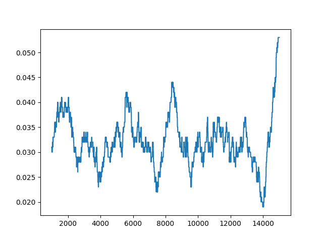
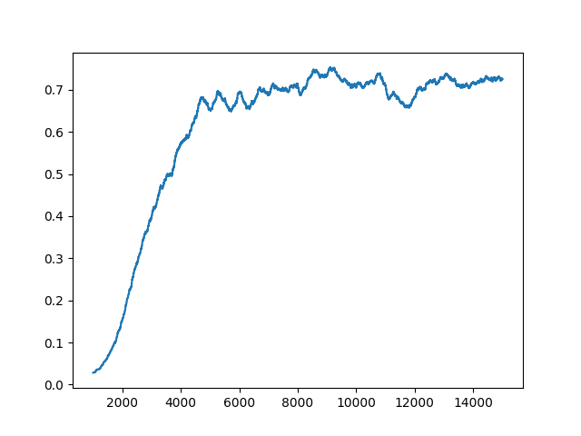
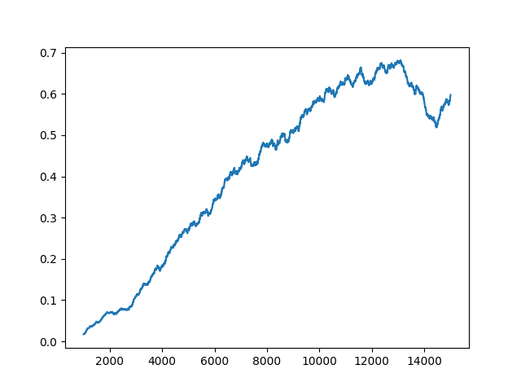
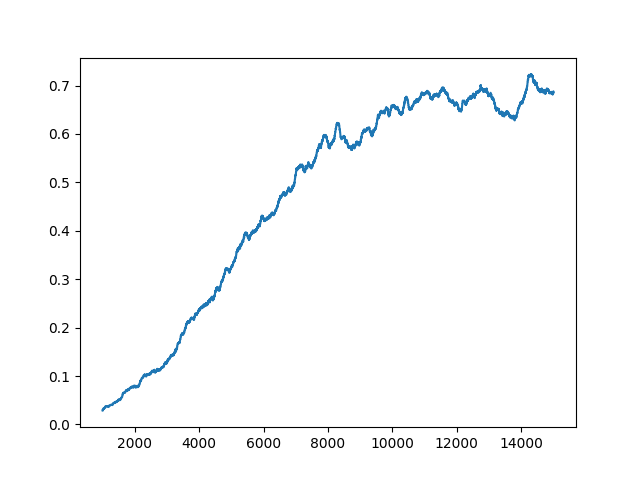
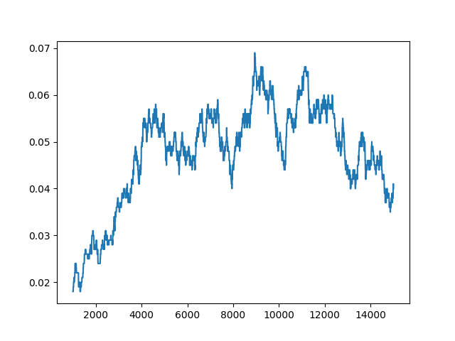
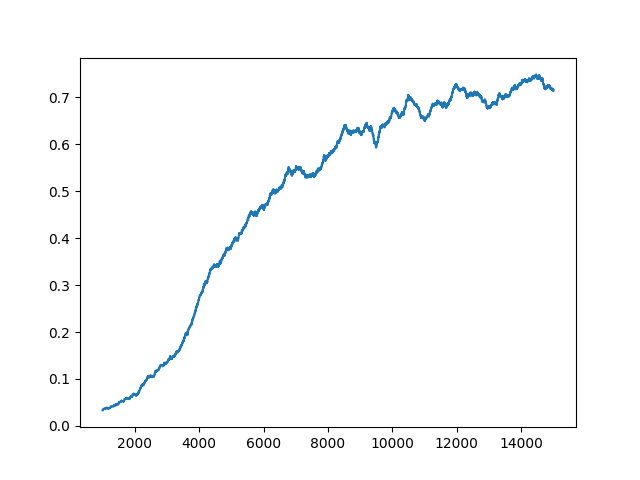
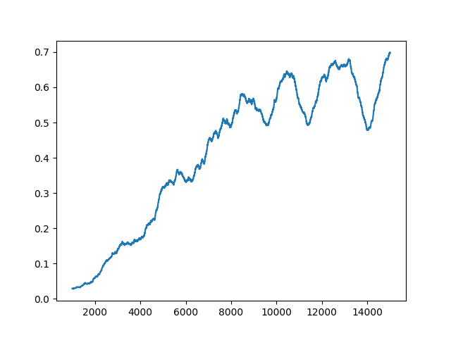
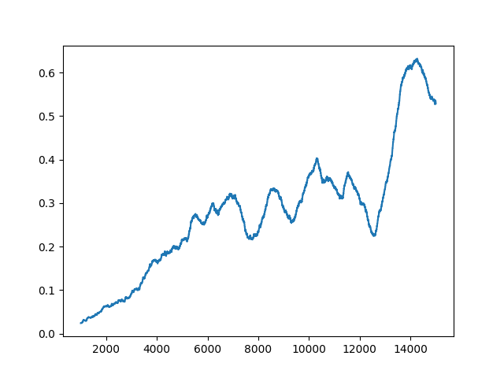

Jakub Ostrzołek
WSI ćwiczenie 6 - Q-Learning
Opis ćwiczenia
Celem ćwiczenia było zaimplementowanie algorytmu Q-Learning.
Klasa implementująca agenta wykorzystującego algorytm Q-Learning ma następujące parametry konstruktora:
n_states- ilość różnych stanów środowiskan_actions- ilość możliwych akcji agentadiscount- dyskontlearning_rate- siła uczenia się
Klasa posiada następujące metody:
decide_epsilon- wybierz ruch dla danego stanu za pomocą metody -zachłannejdecide_boltzmann- wybierz ruch dla danego stanu za pomocą metody Boltzmannaupdate_q- zaktualizuj funkcję wartości-akcji na podstawie nagrody przydzielonej za wykonany ruch
Wykorzystane zewnętrzne biblioteki
numpymatplotlib
Testowanie sieci
Aby przetestować agenta należy wykonać skrypt main.py, uprzednio zmieniając jego parametry zgodnie z zapotrzebowaniem.
Skrypt wygeneruje nowego agenta i będzie go uczył przez zadaną ilość epizodów, wyświetlając okresowo jego postępy (średnią nagrodę za ostatni ruch i jej odchylenie standardowe oraz mapę najlepszych ruchów).
Parametr exploration (podawany do funkcji decide_xxx) będzie zmieniany w czasie przez skrypt w sposób wykładniczy, zbiegający do zadanej wartości z zadaną szybkością. Jego wartość będzie aktualizowana przed każdym nowym epizodem.
Wykresy i wnioski
Wszystkie wykresy ukazują zależność średniej nagrody ostatnich 1000 epizodów od numeru epizodu (liczbę epizodów braną pod uwagę można ustawić parametrem PLOT_LOOKBEHIND).
Exploration lambda
Parametr ten wyznacza szybkość wykładniczego zmniejszania wartości exploration między epizodami.
EXPLORATION LAMBDA |
wykres |
|---|---|
| 0,005 |  |
| 0,001 |  |
| 0,0005 |  |
| 0,00025 |  |
- im większy ten parametr, tym szybciej agent się uczy, a wykres szybciej się wygładza (do pewnego momentu)
- zbyt duża wartość tego parametru sprawia, że agent nie potrafi w wyznaczonej liczbie epizodów dobrze się wytrenować, ponieważ zmiany jego funkcji wartości-akcji stają się zbyt małe, zanim jest w stanie znaleźć optymalną strategię
- parametr ten kontroluje punkt zmiany skupienia agenta - z eksploracji na eksploatację.
Learning rate
Parametr ten wyznacza siłę zmian wprowadzanych do funkcji wartości-akcji przy jej aktualizacji po wykonaniu kroku. W oryginalnym algorytmie Q-Learning może się on również zmieniać w czasie, jedak testy pokazały, że manipulacja samym parametrem exploration jest (w przypadku tego problemu) lepsza i wystarczająca.
LEARNING RATE |
wykres |
|---|---|
| 0,5 |  |
| 0,3 |  |
| 0,1 |  |
| 0,05 |  |
| 0,025 |  |
| 0,010 |  |
- parametr ten nie zmienia drastycznie osiągów agenta
- ustawienie go zbyt nisko przypomina sytuację, gdy parametr
EXPLORATION_LAMBDAbył ustawiony zbyt wysoko. Wyjaśnienie jest to samo - agent jest 'zmuszany' do zaprzestania eksploracji pomimo, że nie znalazł jeszcze optymalnej strategii - ustawienie go zbyt wysoko nieznacznie obniża osiągi agenta.
Discount
Parametr ten wyznacza 'dalekowzroczność' agenta. Im większy on jest, tym więcej kroków w przód agent będzie w stanie wziąć pod uwagę.
DISCOUNT |
wykres |
|---|---|
| 1,00 |  |
| 0,95 |  |
| 0,90 |  |
| 0,80 |  |
- parametr jest czuły na zmiany
- ustawienie go zbyt nisko powoduje dużą nieregularność w osiągach agenta - zmiana w funkcji wartości-akcji w jednym miejscu szybko pociąga za sobą zmiany w poprzedzających je akcjach
- ustawienie go na wartość 1 powoduje, że każda zmiana funkcji wartości-akcji propaguje w nieskończoność, do każdego poprawnego stanu, przez co w pewnym momencie informacje się nazwajem zacierają.